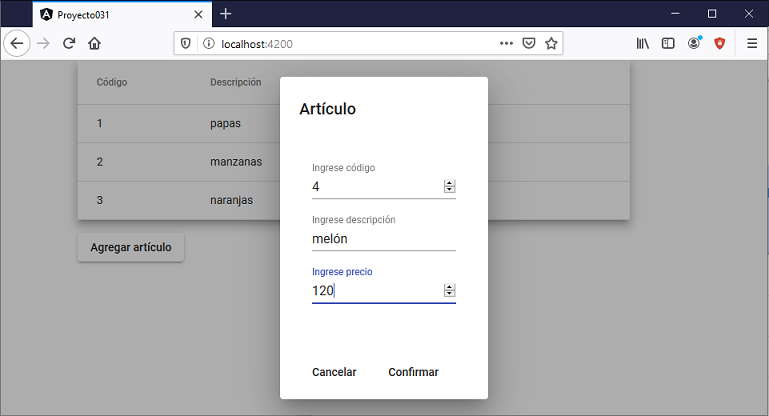

Para crear diálogos modales en Angular Material debemos utilizar el servicio 'MatDialog'.
Se debe crear una componente nueva y luego hacer referencia desde nuestra componente principal.
Mostrar un listado de artículos ficticios(codigo, descripción y precio), disponer un botón que al ser presionado nos muestre un diálogo modal para permitir la carga de un artículo.
Crearemos primero el proyecto
ng new proyecto031
Procedemos a instalar todas las dependencias de Angular Material ayudados por Angular CLI mediante el comando 'add':
ng add @angular/material
Para un mayor orden creamos la clase 'Articulo' en un archivo independiente:
ng generate class Articulo
El código fuente de la clase debe ser (articulo.ts):
export class Articulo {
constructor(public codigo: number, public descripcion: string, public precio: number) {
}
}
Creamos ahora la componente que administrará el diálogo modal:
ng generate component dialogoarticulo
Se crea la capeta 'dialogoarticulo' con los 4 archivos.
Modificamos el archivo 'dialogoarticulo.component.ts'
import { Component, OnInit, Inject } from '@angular/core';
import {MatDialog, MatDialogRef, MAT_DIALOG_DATA} from '@angular/material/dialog';
import {Articulo} from '../articulo';
@Component({
selector: 'app-dialogoarticulo',
templateUrl: './dialogoarticulo.component.html',
styleUrls: ['./dialogoarticulo.component.css']
})
export class DialogoarticuloComponent implements OnInit {
constructor(
public dialogRef: MatDialogRef<DialogoarticuloComponent>,
@ Inject(MAT_DIALOG_DATA) public data: Articulo) {}
ngOnInit() {
}
cancelar() {
this.dialogRef.close();
}
}
El constructor recibe un servicio de tipo 'MatDialogRef' y se inyecto los datos que se mostrarán inicialmente:
constructor(
public dialogRef: MatDialogRef<DialogoarticuloComponent>,
@ Inject(MAT_DIALOG_DATA) public data: Articulo) {}
El método 'cancelar' procede a cerrar el diálogo:
cancelar() {
this.dialogRef.close();
}
También hacemos los mismo con el archivo 'dialogoarticulo.component.html':
<div>
<h1 mat-dialog-title>Artículo</h1>
<div mat-dialog-content>
<div style="display: flex;flex-direction: column; margin:1rem auto; max-width: 600px; padding: 1rem;">
<mat-form-field>
<input matInput [(ngModel)]="data.codigo" type="number" placeholder="Ingrese código">
</mat-form-field>
<mat-form-field>
<input matInput [(ngModel)]="data.descripcion" type="text" placeholder="Ingrese descripción">
</mat-form-field>
<mat-form-field>
<input matInput [(ngModel)]="data.precio" type="number" placeholder="Ingrese precio">
</mat-form-field>
</div>
</div>
<div mat-dialog-actions>
<button mat-button (click)="cancelar()">Cancelar</button>
<button mat-button [mat-dialog-close]="data" cdkFocusInitial>Confirmar</button>
</div>
</div>
Procedemos a modificar ahora el archivo 'app.module.ts':
import { BrowserModule } from '@angular/platform-browser';
import { NgModule } from '@angular/core';
import { AppComponent } from './app.component';
import { BrowserAnimationsModule } from '@angular/platform-browser/animations';
import { DialogoarticuloComponent } from './dialogoarticulo/dialogoarticulo.component';
import { MatInputModule } from '@angular/material/input';
import { MatButtonModule } from '@angular/material/button';
import { MatDialogModule } from '@angular/material/dialog';
import { FormsModule } from '@angular/forms';
import { MatTableModule } from '@angular/material/table';
@NgModule({
declarations: [
AppComponent,
DialogoarticuloComponent
],
imports: [
BrowserModule,
BrowserAnimationsModule,
MatInputModule,
MatButtonModule,
MatDialogModule,
FormsModule,
MatTableModule
],
providers: [],
bootstrap: [AppComponent]
})
export class AppModule { }
import { Component, ViewChild } from '@angular/core';
import { MatTable } from '@angular/material/table';
import { MatDialog } from '@angular/material/dialog';
import { Articulo } from './articulo';
import { DialogoarticuloComponent } from './dialogoarticulo/dialogoarticulo.component'
import { MatTableDataSource } from '@angular/material/table';
@Component({
selector: 'app-root',
templateUrl: './app.component.html',
styleUrls: ['./app.component.css']
})
export class AppComponent {
columnas: string[] = ['codigo', 'descripcion', 'precio', 'borrar'];
datos: Articulo[] = [new Articulo(1, 'papas', 55),
new Articulo(2, 'manzanas', 53),
new Articulo(3, 'naranjas', 25),
];
ds = new MatTableDataSource<Articulo>(this.datos);
@ViewChild(MatTable) tabla1!: MatTable<Articulo>;
constructor(public dialog: MatDialog) { }
abrirDialogo() {
const dialogo1 = this.dialog.open(DialogoarticuloComponent, {
data: new Articulo(0, '', 0)
});
dialogo1.afterClosed().subscribe(art => {
if (art != undefined)
this.agregar(art);
});
}
borrarFila(cod: number) {
if (confirm("Realmente quiere borrarlo?")) {
this.datos.splice(cod, 1);
this.tabla1.renderRows();
}
}
agregar(art: Articulo) {
this.datos.push(new Articulo(art.codigo, art.descripcion, art.precio));
this.tabla1.renderRows();
}
}
Como dijimos se debe emplear un servicio de tipo 'MatDialog', el mismo llega como parámetro al constructor:
constructor(public dialog: MatDialog) { }
Luego en el evento de 'abrirDialogo' procedemos a llamar al método 'open' del servicio y le pasamos la referencia de la componente del diálogo y un objeto literal al cual le podemos enviar datos iniciales que se mostrarán en el formulario del diálogo:
abrirDialogo() {
const dialogo1 = this.dialog.open(DialogoarticuloComponent, {
data: new Articulo(0, '', 0)
});
También en el mismo método 'abrirDialogo' podemos fijar un método anónimo que se ejecutará cuando se cierre el diálogo (si se presión el botón confirmar luego el parámetro 'art' tiene la referencia de un objeto de tipo Articulo, es decir es distinto a undefined, en dicho caso llamamos al método 'agregar'):
dialogo1.afterClosed().subscribe(art => {
if (art != undefined)
this.agregar(art);
});
}
El método 'agregar' procede a insertar un dato en el arreglo y actualizar la tabla de datos en pantalla:
agregar(art: Articulo) {
this.datos.push(new Articulo(art.codigo, art.descripcion, art.precio));
this.tabla1.renderRows();
}
Codificamos la interfaz visual en el archivo 'app.component.html':
<div style=" margin: auto; width: 80%">
<table mat-table [dataSource]="ds" class="mat-elevation-z8" #tabla1 style="width: 90%;margin-bottom: 1rem;">
<ng-container matColumnDef="codigo">
<th mat-header-cell *matHeaderCellDef> Código </th>
<td mat-cell *matCellDef="let articulo"> {{articulo.codigo}} </td>
</ng-container>
<ng-container matColumnDef="descripcion">
<th mat-header-cell *matHeaderCellDef> Descripción </th>
<td mat-cell *matCellDef="let articulo"> {{articulo.descripcion}} </td>
</ng-container>
<ng-container matColumnDef="precio">
<th mat-header-cell *matHeaderCellDef> Precio </th>
<td mat-cell *matCellDef="let articulo"> {{articulo.precio}} </td>
</ng-container>
<ng-container matColumnDef="borrar">
<th mat-header-cell *matHeaderCellDef> Borra? </th>
<td mat-cell *matCellDef="let j = index;">
<button mat-raised-button color="warn" focusable="false" (click)="borrarFila(j)">
Borra?
</button>
</td>
</ng-container>
<tr mat-header-row *matHeaderRowDef="columnas"></tr>
<tr mat-row *matRowDef="let row; columns: columnas;"></tr>
</table>
<button mat-raised-button (click)="abrirDialogo()">Agregar artículo</button>
</div>
Si ejecutamos la aplicación tenemos como resultado:
Podemos probar esta aplicación en la web aquí.